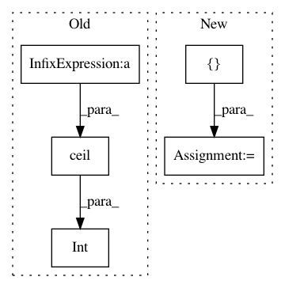

f4af199e0025065d7006fe326b55f25a74e9d625,util/visualizer.py,Visualizer,display_current_results,#Visualizer#,37
Before Change
title = self.name
label_html = ""
label_html_row = ""
nrows = int(np.ceil(len(visuals.items()) / ncols))
images = []
idx = 0
for label, image_numpy in visuals.items():
label_html_row += "<td>%s</td>" % label
After Change
webpage = html.HTML(self.web_dir, "Experiment name = %s" % self.name, reflesh=1)
for n in range(epoch, 0, -1):
webpage.add_header("epoch [%d]" % n)
ims, txts, links = [], [], []
for label, image_numpy in visuals.items():
image_numpy = util.tensor2im(image)
img_path = "epoch%.3d_%s.png" % (n, label)
In pattern: SUPERPATTERN
Frequency: 3
Non-data size: 5
Instances
Project Name: junyanz/pytorch-CycleGAN-and-pix2pix
Commit Name: f4af199e0025065d7006fe326b55f25a74e9d625
Time: 2018-04-18
Author: junyanzhu89@gmail.com
File Name: util/visualizer.py
Class Name: Visualizer
Method Name: display_current_results
Project Name: iskandr/fancyimpute
Commit Name: ea80e4bf2033628822e2b0f92e2e373d1b3c147b
Time: 2015-12-31
Author: alex.rubinsteyn@gmail.com
File Name: fancyimpute/auto_encoder.py
Class Name:
Method Name: make_network